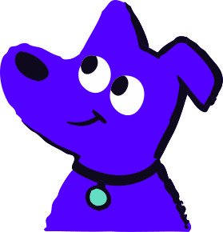

TMS gratis para dispatchers que manejan varios carriers
Adiós, Excel.
Hola, una pantalla.
Todos tus carriers, tus camiones y las cargas de DAT y Truckstop en un solo lugar. Pídele a Miles que planee la siguiente ruta.

Tablero de ejemplo.
Dos formas en que Movik trabaja para ti.
Maneja a todos tus carriers, gratis
Movik TMS con Miles adentro: todos tus carriers en una pantalla y rutas con un solo mensaje. Gratis para dispatchers.
Gana por cada carrier que traes
Refiere carriers a Movik y recibe un ingreso extra por cada uno. Pregunta por el Programa de Partners y te explicamos cómo funciona. Cómo funciona
Tu load board, dentro de tu TMS.
Abre DAT One o Truckstop con Miles en Chrome. Cada carga que ves aparece en Movik unos segundos después, con el broker ya revisado.
Funciona con DAT One y Truckstop. Solo instalas una extensión de Chrome: Miles.
789 mi · $3.11/mi · el broker paga en 27 díasAprobada
452 mi · $2.94/mi · el broker paga en 41 díasRevisar
1,312 mi · $2.61/mi · broker nuevoNo está en Movik
Cargas de ejemplo.
El trabajo de oficina, resuelto en un solo lugar.
Lo que antes vivía en hojas de cálculo, mensajes y llamadas.
Todos tus carriers
Cargado, vacío o sin carga, de un vistazo.
Toda la ruta
Recogida, entrega, millas vacías y costo por milla.
Todos los camiones
Dónde está cada camión de tus carriers.
Rutas con un solo mensaje.
Dile a Miles dónde se recoge y dónde se entrega. Planea la ruta, las millas vacías y tu costo real por milla.
- Por texto o por voz
- Sueltas la rate con y la carga se crea
- También por Telegram

Conversación de ejemplo.
Usa Movik TMS. Gana por los carriers que traes.
Cada carrier que refieres a Movik te da un ingreso extra. Déjanos tus datos y Sara, de nuestro equipo de partners, te explica cómo funciona.
Antes de empezar.
¿Tengo que instalar algo?
Solo Miles, una extensión de Chrome, para traer tu load board. Todo lo demás funciona en tu navegador.
¿Puedo traer mis rate cons y mi correo?
Sí. Conecta Gmail u Outlook, o suelta una rate con: Movik la lee y crea la carga por ti.
¿Por qué es gratis?
Estamos abriendo Movik TMS a los dispatchers mientras lo construimos con ellos. Crea tu cuenta hoy.
¿Cuánto cuesta?
Nada. Movik TMS es gratis para dispatchers por ahora. Puedes crear tu cuenta hoy.
¿Mis carriers tienen que pagar?
No. Los invitas con su número DOT y reciben una cuenta gratis de Movik.
¿Funciona con mi load board?
Sí. Instala Miles en Chrome y abre DAT One o Truckstop. Cada carga que ves aparece en Movik con el broker revisado, y la reservas con un clic.
¿Puedo ganar por los carriers que traigo?
Sí. Con el Programa de Partners de Movik recibes un ingreso extra por cada carrier que refieres. Pregunta por él y nuestro equipo de partners te explica cómo funciona.
Que ningún camión se quede parado.
Maneja a todos tus carriers con Miles a tu lado.